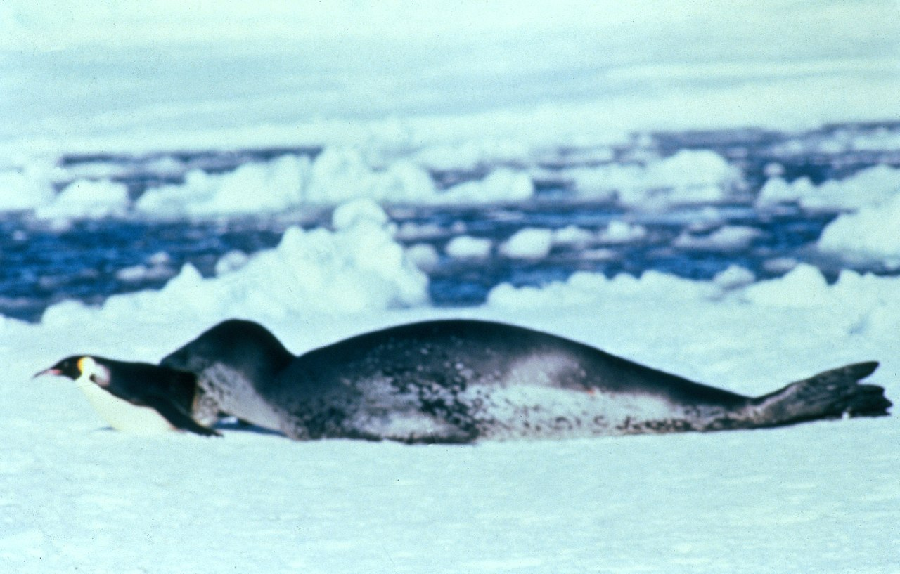
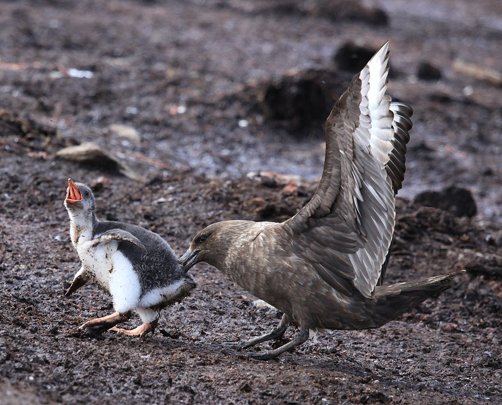

Gli sfeniscidi (Spheniscidae Bonaparte, 1831) sono una famiglia di uccelli comunemente noti come pinguini.
Sono l'unica famiglia dell'ordine Sphenisciformes.
Sono gli uccelli più acquatici in assoluto. Il loro gruppo si è evoluto a partire da uccelli volatori, ma
ora nessuna specie di pinguino è in grado di volare. Sono animali molto specializzati e sociali, hanno una
forma idrodinamica e ali trasformate in pinne che li fanno perfetti nuotatori.
Etimologia
Il nome pinguino è di etimo incerto. L'ipotesi più realistica lo fa risalire, attraverso il francese pingouin e l'inglese penguin (o il neerlandese pinguin) al bretone penngwen ("testa bianca"), che identificava l'alca impenne (Pinguinus impennis), una specie di uccello che popolava l'Oceano Atlantico settentrionale, estinta nel 1844 a causa di una caccia incontrollata per ottenerne il grasso. Altre ipotesi, meno accreditate, la fanno derivare dallo spagnolo pingüe, cioè "grasso", o direttamente da pinguis che in latino significava "grasso".
Biologia
Tutte le specie di pinguini sono inadatte al volo, ma sono eccellenti nuotatori, in grado di restare sott'acqua in apnea per 30 minuti. Come tutti gli uccelli, il pinguino è un animale omeotermo. I pinguini hanno un corpo tozzo e avvolto da uno spesso strato di grasso, che funge da riserva di cibo e come protezione dal freddo polare.
Movimenti nell'acqua
Gli Spheniscidae possono muoversi nell'acqua in tre differenti modi:
- nuoto in superficie
- volo subacqueo
- nuoto a focena
Movimenti sulla terra
Camminano lentamente dondolandosi. Questi animali hanno un'andatura molto dinoccolata e solo sulle discese ghiacciate raggiungono notevoli velocità, lanciandosi in lunghe scivolate sulla pancia. Con quell'andatura sembrano docili, ma possono essere molto aggressivi. Per difendere il compagno o i propri piccoli possono tirare beccate molto forti.
Alimentazione
Si nutrono di pesci, crostacei e piccoli molluschi.
Riproduzione
I pinguini nidificano in colonie, dove ritornano (con l'eccezione di tre specie, il pinguino del Capo, il pinguino Papua ed il pinguino delle Galapagos) dopo una stagione passata esclusivamente in mare a pescare. La maggior parte dei pinguini inizia a nidificare a marzo-aprile, con l'arrivo dell'inverno polare. Alcune specie costruiscono dei nidi rudimentali, fatti con pietre e piume.
Predatori
Tra i principali predatori dei pinguini sulla superficie terrestre ci sono la procellaria gigante (Macronectes giganteus), uccello con un comportamento molto aggressivo, gli stercorari (Stercorarius spp.), le ossifraghe (Macronectes spp.), i chionidi (Chionidae spp.), i gabbiani (Larus spp.) e la weka (Gallirallus australis). Questi predatori si nutrono principalmente dei piccoli e delle uova. Per proteggere i propri piccoli, i pinguini stanno costantemente attaccati a loro, e alcune specie hanno trovato una soluzione efficace: nidificare insieme ad altri animali. Ad esempio, alcune specie come il pinguino crestato, nidificano insieme agli albatros, uccelli pacifici che, con un'apertura alare di 3 m, sono abbastanza grandi da tenere alla larga eventuali predatori. Un altro modo, attuato da tutte le specie, è quello dello scambio di turni di pesca tra i genitori: un genitore si occupa della pesca per procurare cibo ai piccoli e uno si occupa di badare ai pulcini. Al ritorno dalla pesca, i genitori si scambiano i ruoli e così via. I suoi principali predatori in mare sono la foca leopardo (Hydrurga leptonyx), l'orca (Orcinus orca) il leone marino (Arctocephalus spp.), l'otaria (Otaria flavescens) e l'elefante marino (Mirounga leonina)

Non sempre sono rose e fiori...